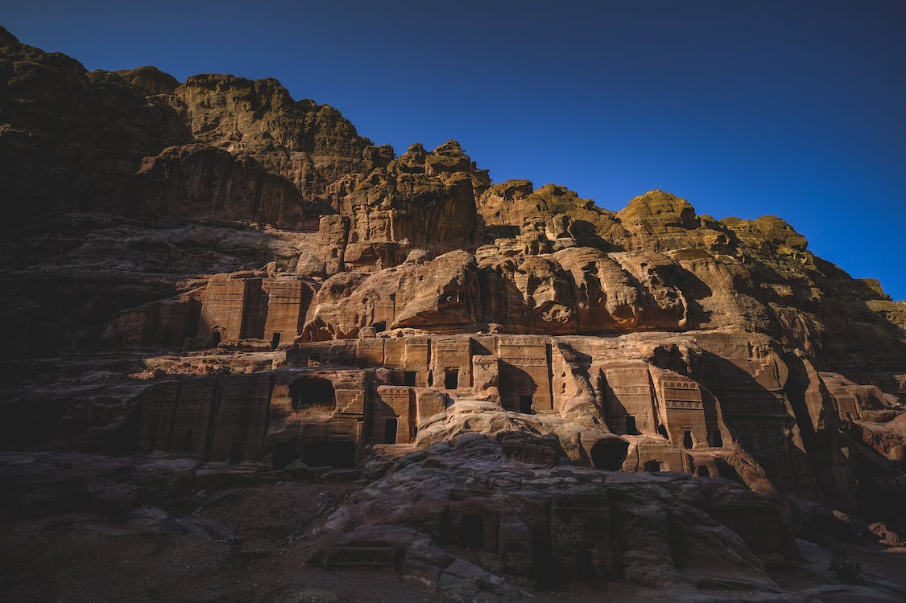
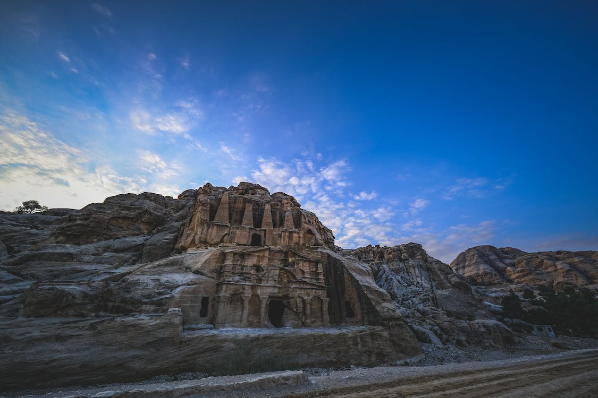
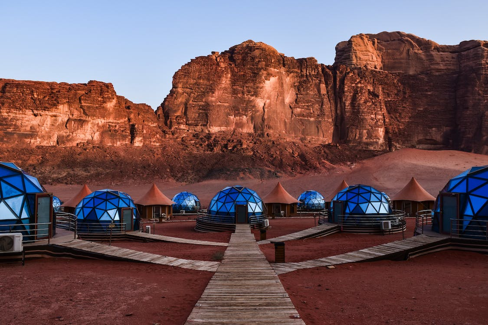

IMAZHE TE PETRA




PETRA fillimisht ishte e njohur si Raqmu.Gjendet midis Detit te Vdekur dhe Detit te Kuq dhe ndodhet ne nje kanion. Eshte qytet historik dhe arkeologjik ne jug te Jordanise Petra besohet te jete vendosur ne vitin 9000 p.e.s dhe u krijuar ne shek.4 ne mbreterine Nabatean. Petra eshte simbol i Jordanise dhe vendi me i vizituar nga turistet.
Petra numron shume turiste gjate vitit,ne vitin 2018 rreth 800k turiste vizituan vendin. Numri i turisteve arriti kulmin ne 1 milion ne vitin 2010;por politika arabe ngadalsoi pakez turizmin. Me 6 dhjetor 1985,Petra u caktua nje vend i trashegimise boterore. Ai u emerua poashtu nje nga shtate mrekullite e reja te botes!
Menyra e ndertimit te Petres kishte habitur prej kohesh studiuesit,derisa imazhet me laser filluan te ofrojne te dhena! Ne fillim ata gdhenden shkalle prej guri pergjate faqes se shkembit.Me pas muratoret dhe artistet do ti perdornin ato shkalle per te vazhduar punen me ne thellesi. Shume studiues supozojne se godinat nuk ishin rezidenca banimi por ne fakt varreza.